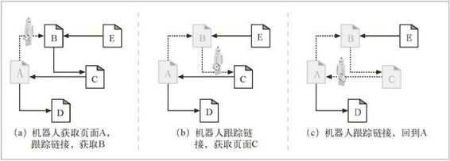

9.1 爬虫及爬行方式
Web 爬虫是一种机器人，它们会递归地对各种信息性 Web 站点进行遍历，获取第一个 Web 页面，然后获取那个页面指向的所有 Web 页面，然后是那些页面指向的所有 Web 页面，依此类推。递归地追踪这些 Web 链接的机器人会沿着 HTML 超链创建的网络“爬行”，所以将其称为爬虫（crawler）或蜘蛛（spider）。
因特网搜索引擎使用爬虫在 Web 上游荡，并把它们碰到的文档全部拉回来。然后对这些文档进行处理，形成一个可搜索的数据库，以便用户查找包含了特定单词的文档。网上有数万亿的 Web 页面需要查找和取回，这些搜索引擎蜘蛛必然是些最复杂的机器人。我们来进一步仔细地看看这些爬虫是怎样工作的。
9.1.1 从哪儿开始：根集
在把饥饿的爬虫放出去之前，需要给它一个起始点。爬虫开始访问的 URL 初始集合被称作根集（root set）。挑选根集时，应该从足够多不同的站点中选择 URL，这样，爬遍所有的链接才能最终到达大部分你感兴趣的 Web 页面。
要在图 9-1 所示的 Web 上爬行，使用哪个根集比较好呢？与在真实的 Web 中一样，没有哪个文档最终可以链接到所有其他文档上去。如果从图 9-1 的文档 A 开始，可以到达 B、C 和 D，然后是 E 和 F，然后到 J，然后到 K。但没有从 A 到 G，或从 A 到 N 的链路。
图 9-1 根集要能够到达所有的页面
这个 Web 结构中的某些 Web 页面，比如 S、T 和 U，几乎是被隔离开来的——它们是孤立的，没有任何链接指向它们。可能这些孤独的页面是一些新页面，还没人找到它们。或者可能是一些非常老的或不显眼的页面。
总之，根集中并不需要有很多页面，就可以涵盖一大片 Web 结构。在图 9-1 中，要抵达所有页面，根集中只需要有 A、G 和 S 就行了。
通常，一个好的根集会包括一些大的流行 Web 站点（比如 http://www.yahoo.com）、一个新创建页面的列表和一个不经常被链接的无名页面列表。很多大规模的爬虫产品，比如因特网搜索引擎使用的那些爬虫，都为用户提供了向根集中提交新页面或无名页面的方式。这个根集会随时间推移而增长，是所有新爬虫的种子列表。
9.1.2 链接的提取以及相对链接的标准化
爬虫在 Web 上移动时，会不停地对 HTML 页面进行解析。它要对所解析的每个页面上的 URL 链接进行分析，并将这些链接添加到需要爬行的页面列表中去。随着爬虫的前进，当其发现需要探查的新链接时，这个列表常常会迅速地扩张。1 爬虫要通过简单的 HTML 解析，将这些链接提取出来，并将相对 URL 转换为绝对形式。 2.3.1 节讨论了如何进行这种转换。
1 我们会在 9.1.3 节开始讨论爬虫是否需要记住它们到过何处。在爬行过程中，这个已发现 URL 列表会不断扩张，直到已经对 Web 空间进行了彻底的探查为止，这时爬虫就会到达一个不再发现新链接的状态了。
9.1.3 避免环路的出现
机器人在 Web 上爬行时，要特别小心不要陷入循环，或环路（cycle）之中。我们来看看图 9-2 中所示的爬虫。
在图 9-2a 中，机器人获取页面 A，看到 A 链接到 B，就获取页面 B。
在图 9-2b 中，机器人获取页面 B，看到 B 链接到 C，就获取页面 C。
在图 9-2c 中，机器人获取页面 C，会看到 C 链接到 A。如果机器人再次获取页面 A， 就会陷入一个环路中，获取 A、B、C、A、B、C、A……

图 9-2 在 Web 的超链中爬行
机器人必须知道它们到过何处，以避免环路的出现。环路会造成机器人陷阱，这些陷阱会暂停或减缓机器人的爬行进程。
9.1.4 循环与复制
至少出于下列三个原因，环路对爬虫来说是有害的。
它们会使爬虫陷入可能会将其困住的循环之中。循环会使未经良好设计的爬虫不停地兜圈子，把所有时间都耗费在不停地获取相同的页面上。爬虫会消耗掉很多网络带宽，可能完全无法获取任何其他页面了。
爬虫不断地获取相同的页面时，另一端的 Web 服务器也在遭受着打击。如果爬虫与服务器连接良好，它就会击垮 Web 站点，阻止所有真实用户访问这个站点。这种拒绝服务是可以作为法律诉讼理由的。
即使循环自身不是什么问题，爬虫也是在获取大量重复的页面 [ 通常被称为“dups”（重复），以便与“loops”（循环）押韵 ]。爬虫应用程序会被重复的内容所充斥，这样应用程序就会变得毫无用处。返回数百份完全相同页面的因特网搜索引擎就是一个这样的例子。
9.1.5 面包屑留下的痕迹
但是，记录曾经到过哪些地方并不总是一件容易的事。编写本书时，因特网上有数十亿个不同的 Web 页面，其中还不包括那些由动态网关产生的内容。
如果要爬行世界范围内的一大块 Web 内容，就要做好访问数十亿 URL 的准备。记录下哪些 URL 已经访问过了是件很具挑战的事情。由于 URL 的数量巨大，所以，要使用复杂的数据结构以便快速判定哪些 URL 是曾经访问过的。数据结构在访问速度和内存使用方面都应该是非常高效的。
数亿 URL 需要具备快速搜索结构，所以速度是很重要的。穷举搜索 URL 列表是根本不可能的。机器人至少要用到搜索树或散列表，以快速判定某个 URL 是否被访问过。
数亿 URL 还会占用大量的空间。如果平均每个 URL 有 40 个字符长，而且一个 Web 机器人要爬行 5 亿个 URL（只是 Web 的一小部分），那么搜索数据结构只是存储这些 URL 就需要 20GB 或更多的存储空间（40 字节 /URL×5 亿个 URL = 20GB）！
这里列出了大规模 Web 爬虫对其访问过的地址进行管理时使用的一些有用的技术。
树和散列表
复杂的机器人可能会用搜索树或散列表来记录已访问的 URL。这些是加速 URL 查找的软件数据结构。
有损的存在位图
为了减小空间，一些大型爬虫会使用有损数据结构，比如存在位数组（presence bit array）。用一个散列函数将每个 URL 都转换成一个定长的数字，这个数字在数组中有个相关的“存在位”。爬行过一个 URL 时，就将相应的“存在位”置位。如果存在位已经置位了，爬虫就认为已经爬行过那个 URL 了。2
2 由于 URL 的潜在数量是无限的，而存在位数组中的比特数是有限的，所以有出现冲突的可能——两个 URL 可能会映射到同一个存在位上去。出现这种情况时，爬虫会错误地认为它已经爬行过某个实际未爬行过的页面了。在实际应用中，使用大量的存在位就可以使这种情况极少发生。产生冲突的后果就是爬虫会忽略某个页面。
检查点
一定要将已访问 URL 列表保存到硬盘上，以防机器人程序崩溃。
分类
随着 Web 的扩展，在一台计算机上通过单个机器人来完成爬行就变得不太现实了。那台计算机可能没有足够的内存、磁盘空间、计算能力，或网络带宽来完成爬行任务。
有些大型 Web 机器人会使用机器人“集群”，每个独立的计算机是一个机器人，以汇接方式工作。为每个机器人分配一个特定的 URL“片”，由其负责爬行。这些机器人配合工作，爬行整个 Web。机器人个体之间可能需要相互通信，来回传送 URL，以覆盖出故障的对等实体的爬行范围，或协调其工作。
Witten 等人编写的 Managing Gigabytes: Compressing and Indexing Documents and Images（《海量数据管理——文档和图像的压缩与索引》）3，Morgan Kaufmann 出版社出版，是实现大规模数据结构的很好的参考书。这本书讲的全是管理大量数据所需的各种诀窍和技巧。
3 本书中文版已由科学出版社出版。（编者注）
9.1.6 别名与机器人环路
由于 URL“别名”的存在，即使使用了正确的数据结构，有时也很难分辨出以前是否访问过某个页面。如果两个 URL 看起来不一样，但实际指向的是同一资源，就称这两个 URL 互为“别名”。
表 9-1 列出了不同 URL 指向同一资源的几种简单方式。
表9-1 同一文档的不同URL别名
| 第一个URL | 第二个URL | 什么时候是别名 | |
|---|---|---|---|
| a | http://www.foo.com/bar.html | http://www.foo.com:80/bar.html | 默认端口为 80 |
| b | http://www.foo.com/~fred | http://www.foo.com/%7Ffred | %7F 与 ~ 相同 |
| c | http://www.foo.com/x.html#early | http://www.foo.com/x.html#middle | 标签并没有修改页面内容 |
| d | http://www.foo.com/readme.htm | http://www.foo.com/README.HTM | 服务器是大小写无关的 |
| e | http://www.foo.com/ | http://www.foo.com/index.html | 默认页面为 index.html |
| f | http://www.foo.com/index.html | http://209.231.87.45/index.html | www.foo.com 使用这个 IP 地址 |
9.1.7 规范化URL
大多数 Web 机器人都试图通过将 URL“规范化”为标准格式来消除上面那些显而易见的别名。机器人首先可先通过下列步骤将每个 URL 都转化为规范化的格式。
如果没有指定端口的话，就向主机名中添加“:80”。
将所有转义符 %xx 都转换成等价字符。
删除 # 标签。
经过这些步骤就可以消除表 9-1 中 a~c 所列的别名问题了。但如果不知道特定 Web 服务器的相关信息，机器人就没什么好办法来避免表 9-1 中 d~f 的问题了。
机器人需要知道 Web 服务器是否是大小写无关的才能避免表 9-1d 中的别名问题。
机器人需要知道 Web 服务器上这个目录下的索引页面配置才能知道表 9-1e 中的情况是否是别名。
即使机器人知道表 9-1f 中的主机名和 IP 地址都指向同一台计算机，它也还要知道 Web 服务器是否配置为进行（参见第 5 章）虚拟主机操作，才能知道这个 URL 是不是别名。
URL 规范化可以消除一些基本的语法别名，但机器人还会遇到其他的、将 URL 转换为标准形式也无法消除的 URL 别名。
9.1.8 文件系统连接环路
文件系统中的符号连接会造成特定的潜在环路，因为它们会在目录层次深度有限的情况下，造成深度无限的假象。符号连接环路通常是由服务器管理员的无心错误造成的，但“邪恶的网管”也可能会恶意地为机器人制造这样的陷阱。
图 9-3 显示了两个文件系统。在图 9-3a 中，subdir 是个普通的目录。在图 9-3b 中，subdir 是个指回到“/”的符号连接。在这两个图中，都假设文件 /index.html 中包含了一个指向文件 subdir/index.html 的超链。
图 9-3 符号连接环路
使用图 9-3a 所示的文件系统时，Web 爬虫可能会采取下列动作：
GET http://www.foo.com/index.html
获取 /index.html，找到指向 subdir/index.html 的链接。
GET http://www.foo.com/subdir/index.html
获取 subdir/index.html，找到指向 subdir/logo.gif 的链接。
GET http://www.foo.com/subdir/logo.gif
获取 subdir/logo.gif，再没有链接了，结束。
但在图 9-3b 的文件系统中，可能会发生下列情况：
GET http://www.foo.com/index.html
获取 /index.html，找到指向 subdir/index.html 的链接。
GET http://www.foo.com/subdir/index.html
获取 subdir/index.html，但得到的还是同一个 index.html。
GET http://www.foo.com/subdir/subdir/index.html
获取 subdir/subdir/index.html。
GET http://www.foo.com/subdir/subdir/subdir/index.html
获取 subdir/subdir/subdir/index.html。
图 9-3b 的问题是 subdir/ 是个指向“/”的环路，但由于 URL 看起来有所不同，所以机器人无法单从 URL 本身判断出文档是相同的。毫无戒备的机器人就有了陷入循环的危险。如果没有某种循环检测方式，这个环路就会继续下去，通常会持续到 URL 的长度超过机器人或服务器的限制为止。
9.1.9 动态虚拟Web空间
恶意网管可能会有意创建一些复杂的爬虫循环来陷害那些无辜的、毫无戒备的机器人。尤其是，发布一个看起来像普通文件，实际上却是网关应用程序的 URL 是很容易的。这个应用程序可以在传输中构造出包含了到同一服务器上虚构 URL 链接的 HTML。请求这些虚构的 URL 时，这个邪恶的服务器就会捏造出一个带有新的虚构 URL 的新 HTML 页面来。
即使这个恶意 Web 服务器实际上并不包含任何文件，它也可以通过无限虚拟的 Web 空间将可怜的机器人带入爱丽丝漫游仙境之旅。更糟的是，每次的 URL 和 HTML 看起来都有很大的不同，机器人很难检测到环路。图 9-4 显示了一个恶意 Web 服务器生成假内容的例子。
更常见的情况是，那些没有恶意的网管们可能会在无意中通过符号连接或动态内容构造出爬虫陷阱。比如，我们来看一个基于 CGI 的日历程序，它会生成一个月历和一个指向下个月的链接。真正的用户是不会不停地请求下个月的链接的，但不了解其内容的动态特性的机器人可能会不断向这些资源发出无穷的请求。4
4 这是 http://www.searchtools.com/robots/robot-checklist.html 上提到的日历站点 http://cgi.umbc.edu/cgibin/WebEvent/Webevent.cgi 上的真实例子。这样的动态内容带来的后果就是，很多机器人都拒绝爬行 URL 中包含子字符串“cgi”的页面。
图 9-4 恶意的动态 Web 空间示例
9.1.10 避免循环和重复
没有什么简单明了的方式可以避免所有的环路。实际上，经过良好设计的机器人中要包含一组试探方式，以避免环路的出现。
总的说来，爬虫的自动化程度越高（人为的监管越少），越可能陷入麻烦之中。机器人的实现者需要做一些取舍——这些试探方式有助于避免问题的出现，但你可能会终止扫描那些看起来可疑的有效内容，因此这种方式也是“有损失”的。
在机器人会遇到的各种危险的 Web 中，有些技术的使用可以使机器人有更好的表现。
规范化 URL
将 URL 转换为标准形式以避免语法上的别名
广度优先的爬行
每次爬虫都有大量潜在的 URL 要去爬行。以广度优先的方式来调度 URL 去访问 Web 站点，就可以将环路的影响最小化。即使碰到了机器人陷阱，也可以在回到环路中获取的下一个页面之前，从其他 Web 站点中获取成百上千的页面。如果采用深度优先方式，一头扎到单个站点中去，就可能会跳入环路，永远无法访问其他站点。5
5 总之，广度优先搜索是个好方法，这样可以更均匀地分配请求，而不是都压到任意一台服务器上去。这样可以帮助机器人将用于一台服务器的资源保持在最低水平。
节流 6
6 在 9.5 节也讨论了请求率的节流问题。
限制一段时间内机器人可以从一个 Web 站点获取的页面数量。如果机器人跳进了一个环路，试图不断地访问某个站点的别名，也可以通过节流来限制重复的页面总数和对服务器的访问总数。
限制 URL 的大小
机器人可能会拒绝爬行超出特定长度（通常是 1KB）的 URL。如果环路使 URL 的长度增加，长度限制就会最终终止这个环路。有些 Web 服务器在使用长 URL 时会失败，因此，被 URL 增长环路困住的机器人会使某些 Web 服务器崩溃。这会让网管错误地将机器人当成发起拒绝服务攻击的攻击者。
要小心，这种技术肯定会让你错过一些内容。现在很多站点都会用 URL 来管理用户的状态（比如，在一个页面引用的 URL 中存储用户 ID）。用 URL 长度来限制爬虫可能会带来些麻烦；但如果每当请求的 URL 达到某个特定长度时，都记录一次错误的话，就可以为用户提供一种检查某特定站点上所发生情况的方法。
URL/ 站点黑名单
维护一个与机器人环路和陷阱相对应的已知站点及 URL 列表，然后像躲避瘟疫一样避开它们。发现新问题时，就将其加入黑名单。
这就要求有人工进行干预。但现在很多大型爬虫产品都有某种形式的黑名单，用于避开某些存在固有问题或者有恶意的站点。还可以用黑名单来避开那些对爬行大惊小怪的站点。7
7 9.4 节讨论了站点怎样才能避免被爬行，但有些用户拒绝使用这种简单的控制机制，在其站点被爬行时又会变得非常愤怒。
模式检测
文件系统的符号连接和类似的错误配置所造成的环路会遵循某种模式；比如，URL 会随着组件的复制逐渐增加。有些机器人会将具有重复组件的 URL 当作潜在的环路，拒绝爬行带有多于两或三个重复组件的 URL。
重复并不都是立即出现的（比如，“/subdir/subdir/subdir...”）。有些环路周期可能为 2 或其他间隔，比如“/subdir/images/subdir/images/subdir/images/...”。有些机器人会查找具有几种不同周期的重复模式。
内容指纹
一些更复杂的 Web 爬虫会使用指纹这种更直接的方式来检测重复。使用内容指纹的机器人会获取页面内容中的字节，并计算出一个校验和（checksum）。这个校验和是页面内容的压缩表示形式。如果机器人获取了一个页面，而此页面的校验和它曾经见过，它就不会再去爬行这个页面的链接了——如果机器人以前见过页面的内容，它就已经爬行过页面上的链接了。
必须对校验和函数进行选择，以求两个不同页面拥有相同校验和的几率非常低。 MD5 这样的报文摘要函数就常被用于指纹计算。
有些 Web 服务器会在传输过程中对页面进行动态的修改，所以有时机器人会在校验和的计算中忽略 Web 页面内容中的某些部分，比如那些嵌入的链接。而且，无论定制了什么页面内容的动态服务器端包含（比如添加日期、访问计数等）都可能会阻碍重复检测。
人工监视
Web 就是一片荒野。勇敢的机器人最终总会陷入一个采用任何技术都无能为力的困境。设计所有产品级机器人时都要有诊断和日志功能，这样人类才能很方便地监视机器人的进展，如果发生了什么不寻常的事情就可以很快收到警告。在某些情况下，愤怒的网民会给你发送一些无礼的邮件来提示你出了问题。
爬行 Web 这样规模庞大的数据集时，好的蜘蛛探测法总是会不断改进其工作的。随着新的资源类型不断加入 Web，它会随着时间的推移构建出一些新的规则，并采纳这些规则。好的规则总是在不断发展之中的。
当受到错误爬虫影响的资源（服务器、网络带宽等）处于可管理状态，或者处于执行爬行工作的人的控制之下（比如在内部站点上）时，很多较小的、更具个性的爬虫就会绕开这些问题。这些爬虫更多的是依赖人类的监视来防止这些问题的 发生。
{kind=link}